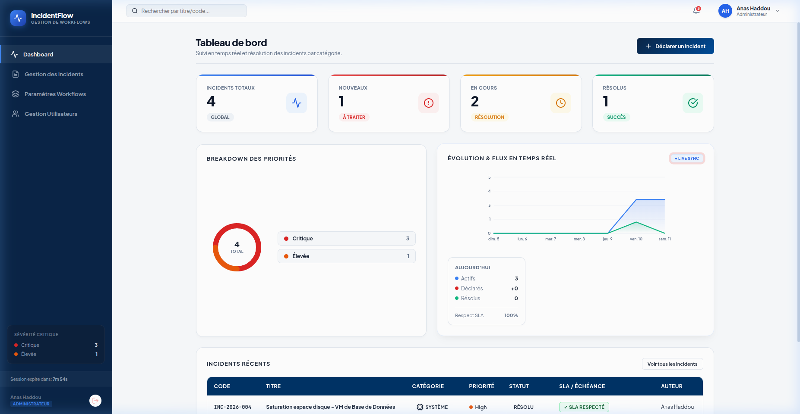

Tableau de Bord
Pilotez en temps réel le flux des incidents signalés et analysez les indicateurs clés de performance.

Indicateurs Clés (KPI Grid)
Quatre cartes dynamiques résument l'état des incidents en temps réel :
- Incidents Totaux : Somme globale des incidents actifs et fermés.
- Nouveaux : Incidents déclarés en attente de prise en charge ou d'attribution par un responsable.
- En cours : Incidents attribués et en cours de résolution par les opérateurs.
- Résolus : Incidents clôturés avec succès.
Visualisations Graphiques
Représente la répartition des incidents selon leur niveau de sévérité. Cliquez sur un segment pour filtrer les incidents par priorité.
Graphique en courbe synchronisé montrant la tendance des déclarations et résolutions chronologiques.
Mise à jour automatiqueFlux des Incidents Récents
La section inférieure liste les trois derniers incidents. Cliquer sur une ligne redirige instantanément vers la fiche détaillée de l'incident pour traitement.
Calcul des KPI (Côté Client)
Les cartes de KPI en haut de page calculent de manière réactive leurs valeurs à partir du state global incidents chargé par l'application :
- Total :
incidents.length - Nouveau :
incidents.filter(i => i.status === 'Nouveau').length - En cours :
incidents.filter(i => i.status === 'En cours').length - Résolu :
incidents.filter(i => i.status === 'Résolu').length
Donut SVG Dynamique : Formule Trigonométrique
Pour éviter les dépendances lourdes, le donut SVG est dessiné à la main. La fonction getDonutSegmentPath convertit les angles en coordonnées cartésiennes de cercle :
// Convertit angles (degrés) en chemin SVG Arc
const getDonutSegmentPath = (cx, cy, r, startAngle, endAngle) => {
const startRad = (startAngle - 90) * Math.PI / 180.0;
const endRad = (endAngle - 90) * Math.PI / 180.0;
// Coordonnées de départ et de fin du segment de cercle
const x1 = cx + r * Math.cos(startRad);
const y1 = cy + r * Math.sin(startRad);
const x2 = cx + r * Math.cos(endRad);
const y2 = cy + r * Math.sin(endRad);
const largeArcFlag = endAngle - startAngle <= 180 ? "0" : "1";
return `M ${x1} ${y1} A ${r} ${r} 0 ${largeArcFlag} 1 ${x2} ${y2}`;
};Gestion Réactive des Délais SLA
La variable tickerTime est mise à jour toutes les secondes par une unique horloge système (setInterval). Cela recalculera dynamiquement les comptes à rebours SLA affichés à l'écran :
// Horloge système réactive globale
useEffect(() => {
const timer = setInterval(() => {
setTickerTime(Date.now());
}, 1000);
return () => clearInterval(timer);
}, []);Les couleurs et animations de l'échéance SLA changent selon le temps restant :
| Temps restant | Style CSS & Animation | Affichage & Libellé |
|---|---|---|
| < 15 minutes | animate-pulse-red (Clignotement rouge vif) |
⏱ Échéance (Xm Ys) |
| 15 à 30 minutes | Fond Orange délavé (#fff7ed), texte orange foncé |
⏱ Échéance (Xm Ys) |
| > 30 minutes | Fond Vert délavé (#f0fdf4), texte vert foncé |
⏱ Xh Ym restants |
| Dépassé & non résolu | Glow Pulsé (pulse-active-glow), texte rouge sombre |
⚠ SLA Dépassé ou 🚨 SLA Dépassé (Escaladé) |